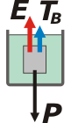

NO ME SALEN
EJERCICIOS RESUELTOS DE FÍSICA DEL CBC
FLUIDOS - PRINCIPIO DE ARQUÍMEDES |
|

|
| |
Hidrostática 14) Un cuerpo cuelga del techo mediante un hilo. Cuando está suspendido en el aire, la tensión del hilo es 600 N y cuando está sumergido totalmente en agua la tensión en el hilo que lo sostiene es 200 N. Calcular su peso específico.
|
Como tantas otras veces en tantos otros temas... tenemos dos situaciones diferentes: las plantearemos por separado y después algo las vinculará, algo que no cambia entre una situación y la otra. Veamos: |
|
|
|
|
Acá está el cuerpo colgando del techo y en el aire. Esta situación la llamaré A. Las dos únicas fuerzas que actúan sobre él son la tensión que hace el piolín, TA, y el peso, P. Como el cuerpo está en equilibrio, podemos asegurar que:
TA = P (Newton)
Te habrás fijado que a la tensión le puse subíndice para identificar a cuál de ambas situaciones pertenece. También te habrás fijado que no cedí a la tentación de calcular el peso del cuerpo... ¡aunque mi inconsciente ya lo sabe! |
| Ahora viene la situación B, en la que ese mismo cuerpo se sumerge en agua (y esperemos que no se oxide). |
|  |
|
Ahora las fuerzas que actúan son tres: la nueva tensión que hace el hilo, el peso del cuerpo (¡que no cambia!) y el empuje que recibe del agua tal como predijo Arquímedes.
TB + E = P (Newton)
Pero Arquímedes no sólo predice la existencia del empuje, también dijo que el empuje es igual al peso del líquido desalojado. Y como el cuerpo se sumerge en forma íntegra desalojará un volumen igual al propio. |
|
|
|
El peso específico, ρ, es el cociente entre el peso y el volumen. Entonces el peso es igual al producto entre el peso específico y el volumen. En el caso del peso del líquido desalojado será así:
E = ρH20 . V (Arquímedes)
Y en el caso del cuerpo, así:
P = ρcuerpo . V (def. peso específico)
De esta última despejo el peso específico del cuerpo y voy reemplazando las incógnitas sacándolas de las ecuaciones anteriores. No te pierdas. Acá va:
ρcuerpo = P / V
ρcuerpo = P . ρH20 / E
ρcuerpo = P . ρH20 / (P — TB )
ρcuerpo = TA . ρH20 / (TA — TB )
ρcuerpo = 600 N . 1 gf/cm3 / (600 N — 200 N)
|
|
el peso de un cuerpo no cambia por más que se sumerja en un líquido
no tenés que confundir el peso de un cuerpo (un negocio privado entre el cuerpo y la Tierra), con el peso aparente (la fuerza que vos tendrías que hacer para sostenerlo estando sumergido) |
ρcuerpo = 1,5 gf/cm3 |
(gf = gramos fuerza) |
|
|
|
| |
|
 |
No sólo me contuve de decir cuánto valía el peso del cuerpo, también evité calcular el volumen. ¿Hago bien o hago mal? ¿Qué te parece, y por qué?
DESAFÍO: ¿Qué ocurriría si el cuerpo tuviese un peso específico de 0,9 gf/cm3? |
|
| |
| |
|
| Algunos derechos reservados.
Se permite su reproducción citando la fuente legítima, o sea, este sitio. Última actualización
jun-11. Buenos Aires, Argentina. |
|
|
| | |
|
|